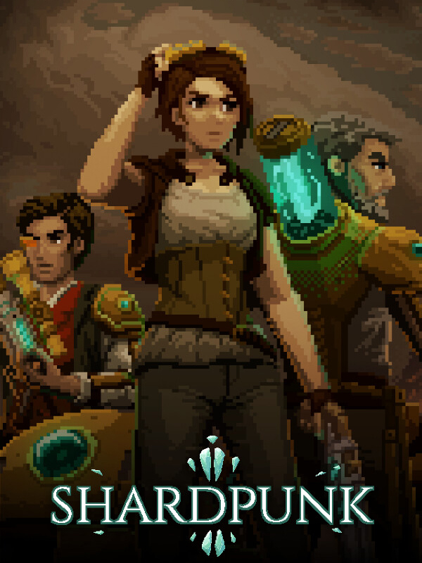

Shardpunk
Shardpunk
Details
|  | |
| Playtime | 2h 27m 0s |
| Last Activity | 2023-04-15 0:09:44 |
| Added | 2023-08-11 0:29:07 |
| Modified | 2025-10-02 9:48:24 |
| Completion Status | Completed |
| Library | Steam |
| Source | Steam |
| Platform | PC (Windows) |
| Release Date | 2023-04-13 |
| Community Score | |
| Critic Score | |
| User Score | |
| Genre | Role-playing (RPG) Strategy Tactical Turn-based strategy (TBS) |
| Developer | Clockwork Pile |
| Publisher | Retrovibe |
| Feature | Single Player |
| Links | Steam Official Website GOG YouTube Discord Twitch |
| Tag | Crafting Grid-Based Movement Isometric Lovecraftian Party-Based RPG Pixel Graphics Post-apocalyptic Real Time Tactics Resource Management Retro Simulation Singleplayer Steampunk Strategy Strategy RPG Supernatural Survival Tactical RPG Turn-Based Combat Turn-Based Tactics |
Description
Outrun the horde and survive another day in the war-torn Capitol.


SEEK SHELTER
In Shardpunk you already lost. Now you need to run for your life while saving as many people and pieces of equipment as possible. Keep on moving and use every skill and item at your disposal to reach the safety of fusion core-operated bunkers.TACTICAL GAMEPLAY
Put together a crew of survivors and use a range of steampunk weapons and bots to scavenge for resources, slow down the horde, and reach safety. Shardpunk mixes turn-based tactical strategy with RPG, survival, and resource management. From battle tactics to the most difficult decisions on who should receive the last medpack or rations, you’ll need to take charge and (hopefully) live with its consequences.VICTORIAN STEAMPUNK
The Rat Swarm has breached the walls of The Capitol and flooded the city with its vermin horde. Push through three districts with progressively more vicious enemies, rising emergency levels, and supplies that dry up like blood from a knife wound. Constantly on the move, you’ll scavenge bodies and resource crates risking that with each detour the rats are getting closer...KEY FEATURES
- XCOM meets Darkest Dungeon as Shardpunk combines turn-based tactical battles with the hard choices made at the bunker
- Grid-based levels that are open for exploration and full of tactical possibilities while you run from the endless hordes of rats
- A motley crew of characters to build your team, each one with unique abilities, equipment, perks, and shortcomings that affect their mates
- Steampunk arsenal and technologies to use in battle that also requires mending and cooling, so they don’t backfire on you in the middle of the fight
- Variety of resources to scavenge, upgrades to unlock, and equipment to craft
- Detailed pixel art visuals that set the victorian mood and feast your eyes with fusion-core explosions